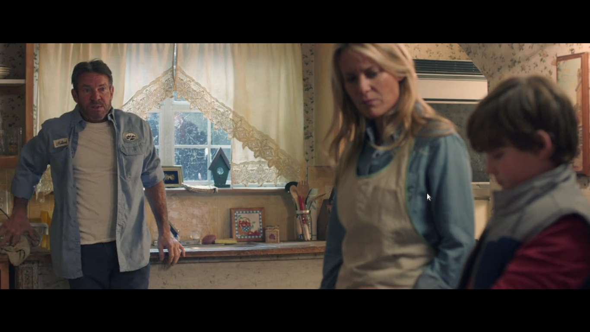
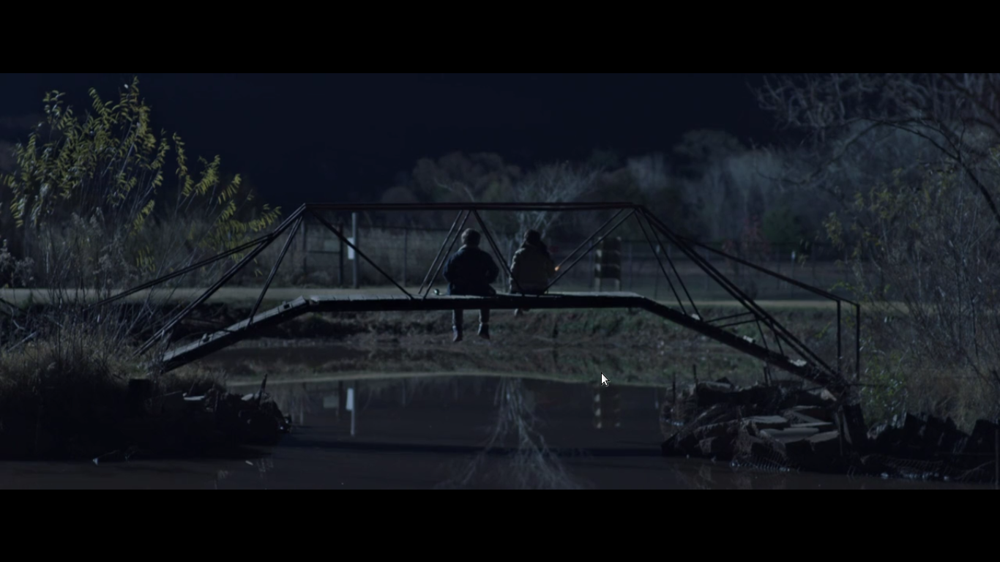
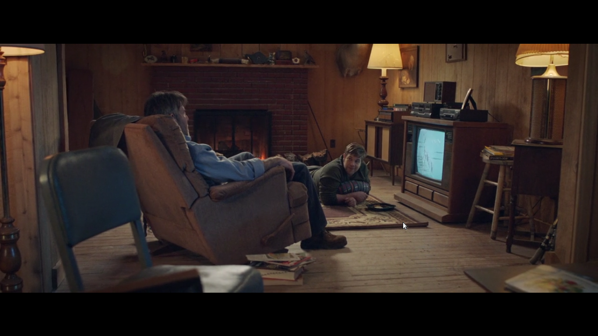
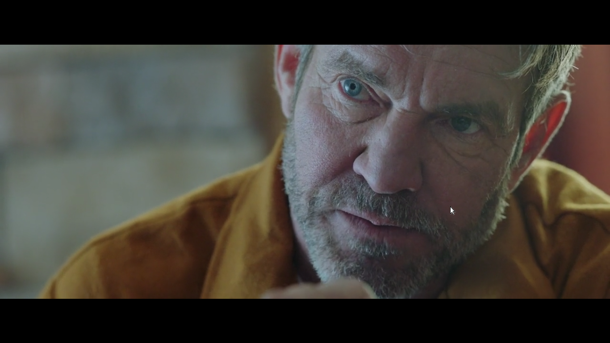
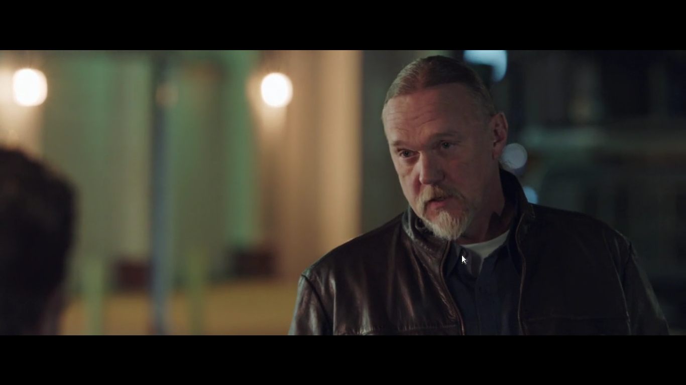
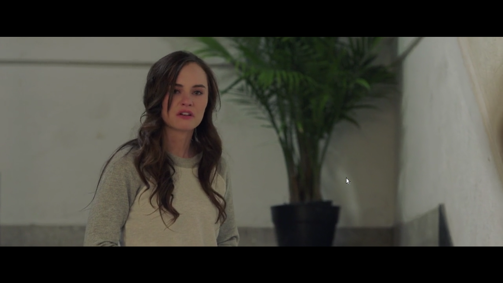
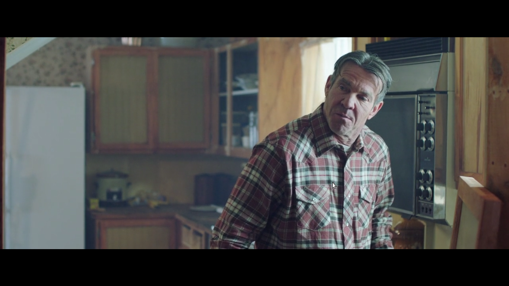
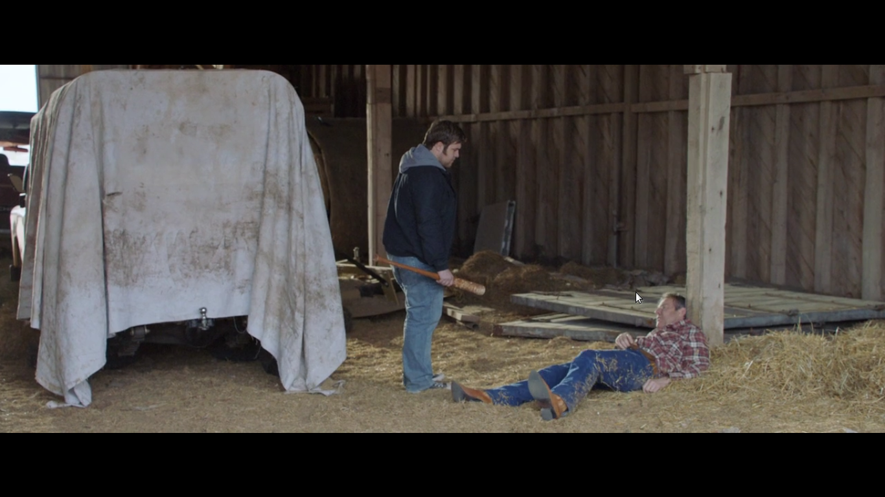
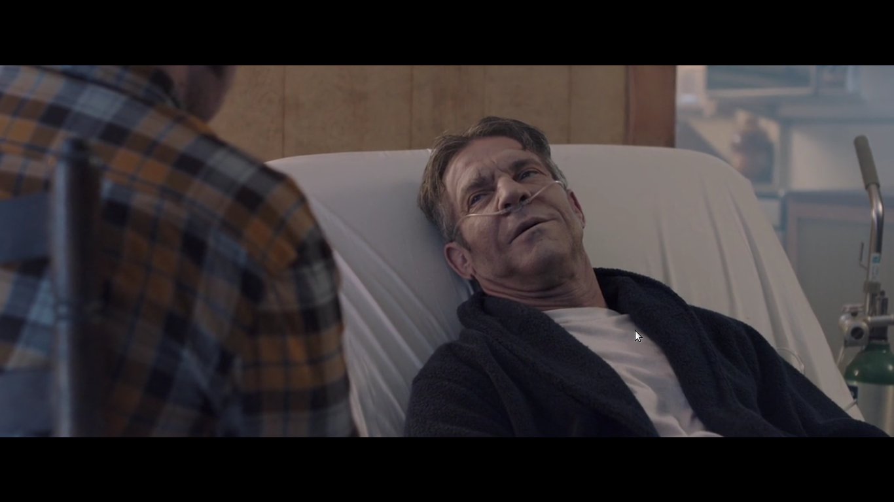

A film úgy kezdődik, hogy egy anyuka örül fia kreativitásának, aki Star Warsos sisakot csinált és elismeri a beletett munkáját. Apjának másképp válaszol a sisakra, ami a családban megbúvó ellentétet domborítja ki, neki a fiú csak annyit mond, hogy “ez csak szemét.” Elég nyomorult hozzáállás nem? A film azt mutatja be, hogy ebből a nyomorból mi a kivezető út. Az apa, egy Han Solo féle karakter, aki nem hisz az álmokban. Azt mondta, hogy az álmok nem jók semmire, magyarul nem fizetik be a csekkeket, elszakítanak a valóságtól. Vissza is kérdez, hogy megértetted? Bart válaszol, hogy érti, de a lelkében mást gondol, és itt először csendben összekülönböznek. Az anyuka összeszorítja a száját, gondolja ebből még lesz konfrontáció. Lett is egyébként, amit Bart szobájából hallhatjuk a dulakodást és az apát egy övvel a kezében Bart ajtajánál. Aztán következik a tragédia. Az apja megfogja a Bart által készített Star Wars X szárnyú pilóta sisakot, és beledobja a hordóban égetett tűzbe, amibe előzőleg az amerikai focis ruháját dobta, nem tudni miért. Rossz napja lehetett neki is. Másnapra az anyuka jó döntést hoz. Elviszi egy keresztény táborba Bart-ot. Az anyuka válaszából kitűnik, hogy ő is volt ilyen táborban. Azt is mondja, hogy “emlékezni fogsz rá.” Egyébként a táborban ismeri meg későbbi feleségét is. A lány az, aki előre meglátta, hogy össze fognak házasodni. Amikor ezt közli Bart-al, el akar menni arról a helyről a lány, de Bart visszatartja. A lány visszakérdez. Miért? Bart válaszol: Csak nem szeretek egyedül lenni. Szerintem gyönyörű jelenet. A tábor végén a lány a kedvenc(!) kazettáját odaadja Bart-nak, amiből aztán zenei karrierje indul. A kazetta Amy Grant-től a Never Alone egyébként. Aztán történik egy tragédia. Az anya elhagyta a családot valószínűleg férje bántalmazása miatt, de önhibájából is. Aztán ugrunk az időben, Bart középiskolás. Az iskolapszichológussal folytatott beszélgetésükből kiderül, hogy, anyja nagyobb bajba került, rosszabb kapcsolatba. Egy fontos mondat elhanzik Bart-tól, mivel csak ketten maradtak, ő és az apja. Szóval: Az iskolapszichológus kérdezte, hogy mit csinált aztán miután az anyja elment? Erre Bart azt válaszolta, hogy próbált abban a legjobb lenni, ami az apját legjobban érdekelte, fociban. Lesérült, és nem játszhat többet. Ez szerintem sokunk számára egy horgonyt jelent a lelkünkben, hogy arra megyünk amerre apánk büszke ránk. Amikor közözen a tv-ben nézik Bart meccsét, elhangzik még egy fontos gondolat az életről, amit az amerikai foci inspirált. Ha az élet leüt, én visszaütök erősebben. Ez volt az apa filozófiája, de Bart kevésbé volt jó játékos. És itt megint jön egy megértetted(!?) pillanat, amikor Bart és apja csendben másodszorra összekülönböznek. Szerintem ha az élet leüt, gondolkozz el magadon. Bart nem volt jó egyébként a fociban. Bart új karrierje az éneklés lett, mivel gyönyörű hangja volt. Történt azonban egy nagyon szomorú eset. Bart apja a kávézóban összeesett, miközben fia nevét olvasta a helyi opera hirdetésén.  A kórházban kiderült, hogy rákja van, ezt viszont nem vallotta be fiának, és a kezelést is elutasította. A történet folytatódik egy harmadik nagy végső konfrontációval, pont mielőtt Bart a templomba készül. Szerintem annak hogy pont templomba indul jelentősége lesz később a film történetszálában, ugyanis itt Bart még nem tért meg teljes szívéből szerintem. Egy ember akkor tér meg, ha a körülötte lévők is megtértek. Bart apja szembesül vele, hogy Bart inkább az anyukájával otthagyta volna őt. Itt kitört kettejük között a majdnem verekedés, előkerült egy baseball ütő is. Ez onnan pattant ki, hogy még az apa a kereső, és jogot tart az ő szabályainak a betartására, és a fiából is kenyérkeresőt akar csinálni. Bart félreérti a viccet magáról, mivel nem fogadja el apja empátiáját új karrierje után, viszont az is igaz, hogy az apa azt mondta, hogy az éneklés nem kenyérkereső állás. Hiszen ő egy Han Solo karakter. (Ez már a második utalás a Star Wars-ra. Hol van BB-8?)  Bart viszont tiszteletlen volt vele, miután félreértette a viccet, mert elkezdte kifigurázni apját. A vége ennek, hogy Bart elmegy, hogy 6 hónappal később egy nagyvárosban koncertezzen ,énekeljen, a Mercyme nevű bandával. A név is beszédes, hiszen azt mondja, hogy irgalom nekem, azaz hogy később megbocsáthasson apjának Bart a verések miatt. Ugyanígy a Millard, ami kimondva egy amerikai sör neve(Miller), ami az apjára utal. Ezért gondolom a szókapcsolatot a Mercyme és Millard között. Egy koncertjük után egy menedzser ( Trace Adkins a country sztár játssza!) azt mondja Millard-nak, hogy még nem áll készen, mert csak egyetlen dal tetszett neki.  Ez azért lehet, mert még nem bocsátott meg az apjának, amit az arckifejezése is elárul, amikor azt kérdezi tőle a menedzser, hogy megtalálta e a lelkét. Nagyon jó színészi játék van egyébként a filmben. A filmben frusztrációt okoz a nézőben, hogy nem tudja, vajon Millard és barátnője kapcsolata kibírja e Bart életformáját. Egyszer felkeresi őt Bart, ő kap egy cd-t, de megsértődik, hogy csak azért jött, hogy elvigye őt a turnébuszon, semmi üdvözlés vagy ígéret, mert Bart agyát átmosta a turné, a karriercsinálás. A zene mindannyiunk lelkét megnyitja, még ha csak a kezünkben tartunk egy cd-t is! Ezt bizonyítja, hogy Shannon elmondja Bartnak köszönésképpen, hogy állandóan imádkozik érte, és reméli, hogy megtalálja azt, amit ő keres. Bart aztán a turnén felhívja Shannon-t, hogy megköszönje az imát érte, mert az meghalgattatott. Kapcsolatba léphettek kiadókkal egy meghallgatáson.  A nagy esemény, amikor öt kiadótól hallják őket viszont nem úgy alakul, ahogy azt elképzelték. Nem kapnak szerződést. Ezután Bart úgy dönt, hogy hazamegy az apjához, kiábrándult a vágyából, hogy sztár lehessen, ez is kiderül Bart-ról. Beugranak neki apja emlékei, hogy ő nem tud majd pénzt csinálni a zenélésből, ébredjen fel az álmaiból. Bart ráébred, hogy haza kell mennie apjához, mert él a fájdalmaival, félelmeivel, és ezért megy haza. Bart apja először kerüli a témát, aztán vall megtéréséről, és imádkozott fia megtéréséért. Előkerül a verés téma is, hogy mennyire verte meg az apja Bartot egyszer. Apja elmondja, hogy ő jót akar, de nem tudja, hogyan csinálja. Bart ezután jön rá, hogy ő az aki nem tud megbocsátani apjának. Ugyanazt a szöveget mondja Bart, amit az apja sujkolt neki gyerekkorában. Hogy adja fel a megbocsátás álmát, mert a valóságtól eltérít. Talán jobb nekünk egy folyamatos álomvilág a bűntelenséghez? Mindannyian ugyanolyanok vagyunk. De milyen szépen van itt kifejezve! Az apa ezután megőrül. Addig üti a felújított autóját, amíg össze nem esik. Közben Bart rájön arra, hogy apja rákban szenved. A megtérés pillanata Bart-nak akkor történik, amikor Bart kezéből kiesik a baseball ütő a földön fekvő apja felett, ami előtte apja kezében volt, és az apja azt mondja, hogy “üssél.” Ezután Bart felsegíti, és szeretet költözik kapcsolatukba. Ha neked Isten megbocsátott, akkor te is meg tudsz bocsátani másoknak. Érdekesség, hogy egy terepjárót törnek össze, amit később Bart megjavít. Ez kettejük kapcsolatát szimbolizálja, és ahogy együtt mennek az autóval az pedig azt, hogy rátaláltak a közös utukra. Mert a lényeg hogy egy irányba haladjunk. Ezután kezdődik apja haldoklása és a Shanonnal való kapcsolat újraépítés, ami nagyon szomorú egyszrészről, de felemelő is Shannon miatt. Shannonról csak a film végén tudjuk meg, hogy kitartott Bart mellett. Bartnak meg kell küzdenie apja elvesztésével, amiben egy előző posztban foglalkozom, hogy Isten miért büntet minket nem fair módokon. Apja úgymond felteszi a kérdést a közönségnek, mivel nagyon beleéljük magunkat Bart szerepébe, hogy mi milyenek vagyunk? Mennyire követjük az álmainkat? Nagyon megrázó rész, mert a halálos ágyán teszi ezt. Olyanok vagyunk mint Bart apja volt megtérése előtt, vagy esetleg Bart? Megbocsátottunk már annak akinek meg kellett? Térítettük-e a környezetünket? Életünk végén semmi más nem számít, csak a szeretet. Ez szerintem a film legfontosabb üzenete! Vajon egy álomvilág megment minket a györtődéstől? Mindkét karakter egy darabig a “valóságban” élt, aztán megtértek, úgymond elolvasták a bibliát, kitisztultak lelkileg. Elfogadták, hogy ha Isten megbocsátott nekünk, akkor nekünk is meg kell bocsátanunk, nincs más út. Ezután Bart olyan számot írt,ami tetszett a kiadóknak, és befutott vele amerikaszerte a rádiókban.